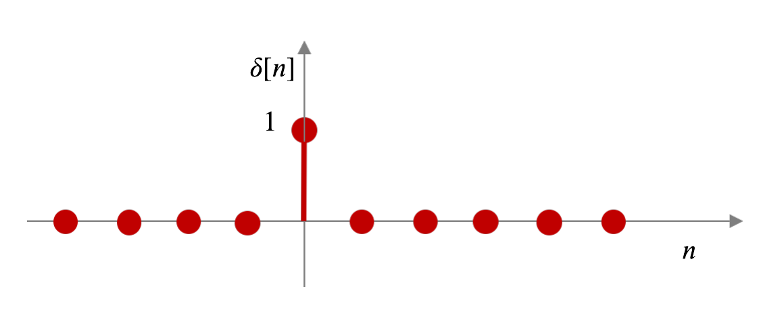
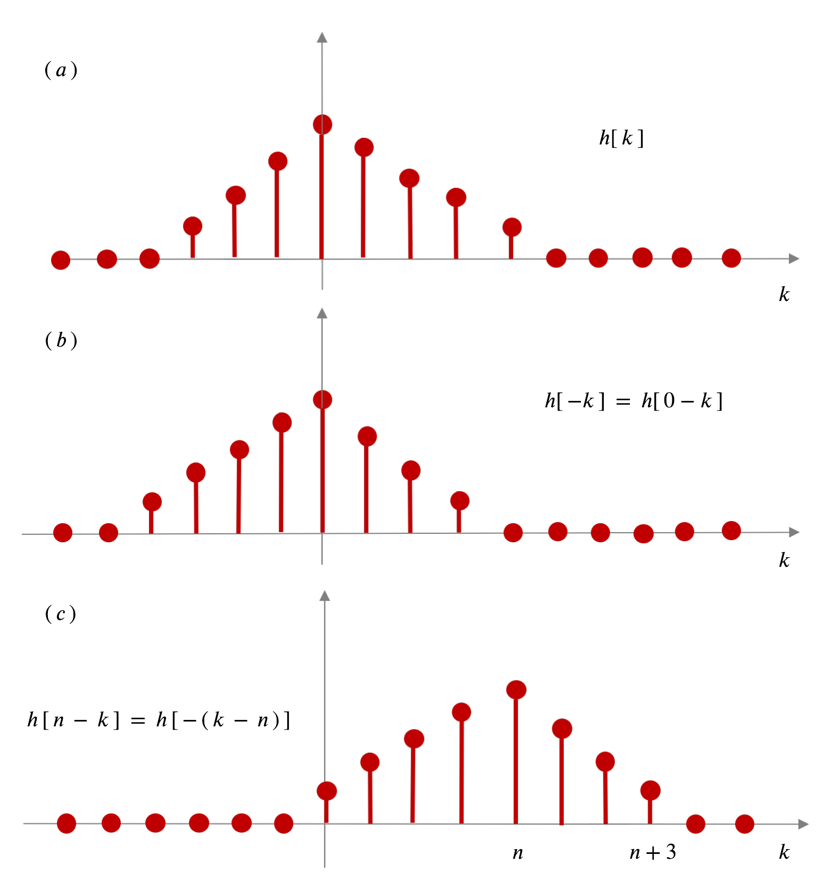
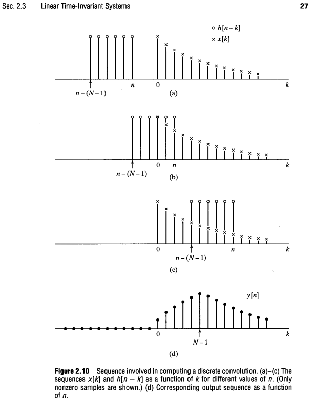

Representación de convolución de sistemas discretos#

Vamos a considerar un
sistema LTI en tiempo discreto:
Si usamos como entrada al sistema la señal
impulso unitariocentrada en cero:
Nota
Entonces, vamos a definir la Respuesta al Impulso Unitario del sistema como su salida correspondiente:
Ahora demostraremos que la salida del sistema
LTIdebido a una señal de entrada arbitraria \(x[\,n\,],\) la podmeos expresar en términos de \(x[\,n\,]\) y \(h[\,n\,]\).En efecto, supongamos que en la entrada del sistema hay una señal \(x[\,n\,]\) (puede ser cualquiera), la que podemos escribir como (recordar
sifting):
Entonces, opera el
sistema LTI en tiempo discreto:
Usando el hecho que el sistema cumple con la propiedad de
aditividad, entonces podemos sacar la sumatoria y re-escribir:
A continuación, usamos también el hecho que el sistema cumple con la propiedad de
escalamiento, entonces quiere decir que podemos sacar las amplitudes del operador \(T\) (ya que son escalares) y re-escribir:
Y dado que el sistema también cumple con la propiedad de
invariancia en el tiempo, entonces para cada \(k\) podemos escribir:
Por lo tanto, hemos demostrado que:
Nota
donde \(h\,[\,n\,]\) es la Respuesta al Impulso Unitario del sistema.
Nota
Este resultado es muy importante en procesamiento de señales. Se conoce como la representación de la convolución de un sistema LTI en tiempo discreto.
Nota
Un sistema LTI se caracteriza por completo por su respuesta al impulso \(h\,[\,n\,]\). Es decir, si conocemos \(h\,[\,n\,]\), entonces la podremos usar para calcular la salida \(y\,[\,n\,]\) del sistema debido a cualquier entrada \(x\,[\,n\,]\).
En general, podemos decir que \(y\,[\,n\,]\) representa la convolución entre dos señales \(x\,[\,n\,]\) y \(h\,[\,n\,]\) y denotarla como:
Ejercicio 1:Suponer que \(h[\,k\,]\) es la señal mostrada en la siguiente figura \((\,a\,)\):

Primero, se pide plotear \(h[\,k\,]\) como una función de la variable independiente \(k\).
En seguida, plotear \(h[\,-k\,]\) en función también de \(k\).
Nota
\(h[\,-k\,]\) es simplemente \(h[\,k\,]\) flipeada en torno a \(k\,=\,0\) como se puede ver en \((\,b\,)\).
Reemplazar ahora \(k\) por \(k\,-\,n\), donde \(n\) es un entero fijo, que nos llevará a un shifteo del origen de la señal \(h[\,-k\,]\) a \(k\,=\,n\). Probar el caso para \(n\,=\,4\) y plotear como se muestra en \((\,c\,)\).
Ejercicio 2:Evaluar analíticamente la siguiente suma de convolución.Consideremos un sistema LTI con respuesta impulso:
donde \(u[n]\) es un escalón unitario centrado en cero.
La entrada al sistema es \(x[n]=a^{n}\cdot u[n]\). Para obtener algo similar a la figura del Libro mostrada más abajo, suponer que un valor para \(a\) tal que \(0<a<1\)
Se pide encontrar la salida del sistema en un índice \(n\) particular.
Sugerencias:
Formar las sumas sobre todos los \(k\) de los productos \(x[k] \cdot h[n-k]\). Plotear: \(x[n]\) y \(h[n-k]\) para: 1) un \(n\) entero negativo; 2) \(0\leq n\) y \(n-(N+1)\leq 0\), y 3) \(0<n-N+1\), ó, \(N-1<n\)
Usar la formula general:
Del libro. Oppenheim, A. and Schafer, R. (2009). Discrete-Time Signal Processing. Prentice Hall Press. USA. Third Edition: página 27, https://d1.amobbs.com/bbs_upload782111/files_24/ourdev_523225.pdf
